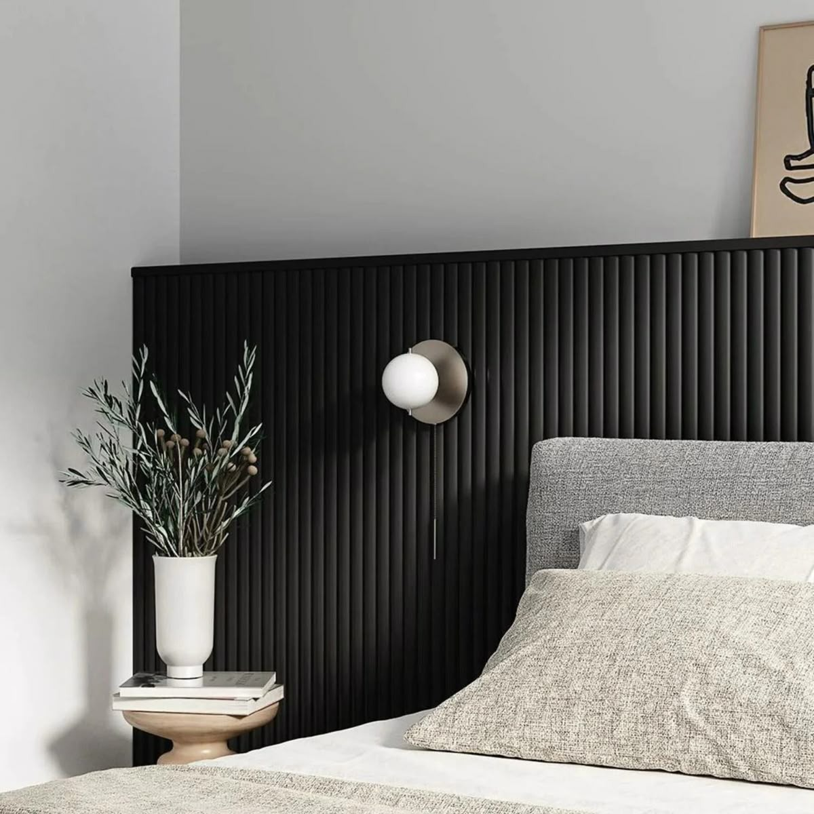

Portfolio · Visual Studies
Selected directions.
A curated visual language of residential, workspace, panel, cladding and hospitality references. Supplied imagery is presented as concept/reference material unless a project is explicitly verified as Armani Interiors work.

P


Visual integrity
References stay references.
Several images supplied for this website are visual references selected to establish the desired design language. They are not represented as completed Armani Interiors projects unless verified by the client.